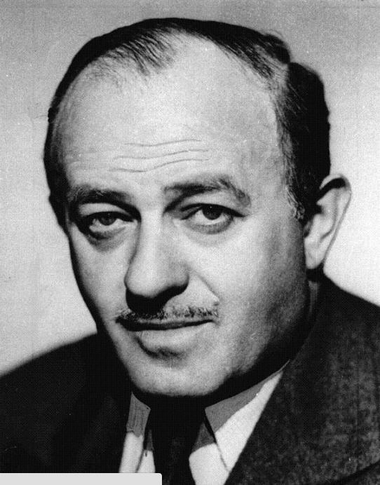

| Oscar Nominations | ||||
|---|---|---|---|---|
| Ceremony | Film | Category | Role | Result |
| 19th Academy Awards Oscars 1947 |
Notorious | Writing (Original Screenplay) | Writer | Nominated |
| 13th Academy Awards Oscars 1941 |
Angels over Broadway | Writing (Original Screenplay) | Writer | Nominated |
| 12th Academy Awards Oscars 1940 |
Wuthering Heights | Writing (Screenplay) | Writer | Nominated |
| 8th Academy Awards Oscars 1936 |
The Scoundrel | Writing (Original Story) | Writer | Won |
| 7th Academy Awards Oscars 1935 |
Viva Villa! | Writing (Adaptation) | Writer | Nominated |
| 1st Academy Awards Oscars 1929 |
Underworld | Writing (Original Story) | Writer | Won |

Ben Hecht